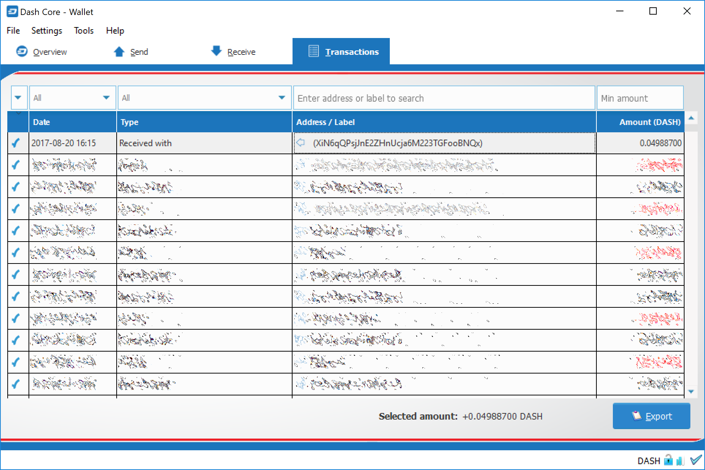

Introduction¶
A paper wallet is a method of storing a private key to access funds stored on a single address. It can be generated on a computer that has never been connected to the internet, and printed out for air-gapped offline storage. As such, they are suitable for storing large amounts of Dash, but care must be taken not to lose the private key, since there is no way of recovering funds if it is ever lost. To use the key, it must be imported or “swept” into an online wallet and should not be used again. Paper wallets are extremely secure but somewhat inconvenient for everyday use compared to hardware wallets, which also offer a high degree of security.
Paper wallets use random user and machine input to create a set of keys/addresses which you then print. You can never regenerate a paper wallet once you turn off the machine. What you print is all you get. For this reason, paper wallets are somewhat vulnerable and require special care because they can get damaged, lost, destroyed or stolen. Even if you encrypt them with BIP38 (which you should), a sufficiently motivated adversary (e.g. robbery/home invasion) could bypass this encryption using the proverbial “$5 wrench attack”.

The $5 wrench attack. Credit: xkcd.com¶
Nevertheless, together with appropriate planning, paper wallets are a highly convenient and user-friendly way to store Dash long term.
Security¶
While you can create a paper wallet using a machine that is connected to the internet, wallets that will be used to store significant funds should be generated using an offline computer running a single-use operating system to ensure that all generated data will be permanently wiped from memory once the process is complete.
A simple method of doing this is to burn a live Linux CD. Ubuntu Desktop is recommended because it will have the most drivers and is simple to use, while Tails and Kali Linux are popular choices for extremely strong security. Booting from an actual CD is most secure since it is mounted read-only, but a USB stick is generally fine as well. Both laptops and desktops can be used if you can ensure that all networking hardware is disabled when you get to the stage of actually generating your keys.
Boot from the CD and download/install your tools (or download them ahead of time to a USB drive). Disconnect from the internet, generate your keys/addresses/printouts, and power off the machine. You are now the only person with access to these addresses.
Death plan¶
Whichever type of cold storage you choose, make a plan to pass on the necessary data to regenerate the keys to your loved ones in the event of an accident - it will happen to us all eventually. Write down your paper wallet BIP38 decryption password or brain wallet passphrase. Then write down instructions on how to use it, and keep them separate with a clear procedure on how they can be accessed when necessary.
Tools¶
A Dash paper wallet can be generated in several ways.
Using the generator at https://paper.dash.org
Using the generator at https://walletgenerator.net/?currency=Dash
Offline using the Dash Paper Wallet source code from GitHub at https://github.com/dashpay/paper.dash.org/releases/latest
Offline using the same code which powers both sites, by viewing the GitHub project or downloading directly
Since the source code for all three options is largely similar, this guide will use https://paper.dash.org as an example. The websites listed here run entirely in your web browser without sending any of the data generated to an external server, but the most secure option is to download the wallet generator and run it on a computer with a freshly installed operating system that is not connected to the internet.
This guide is based on the guide available from https://walletgenerator.net. Please donate if you find this project useful!
Address generation¶
Go to https://paper.dash.org in your web browser (or open index.html if you downloaded the wallet generator). Select your language and choose Dash as the currency if necessary. The following screen will appear:
{kind=link}
Some random data is required to ensure the generated address and key are unique. Move our mouse around and/or type random characters into the text box until the process reaches 100% and the following screen appears:
{kind=link}

A Dash address and private key generated using Dash Paper Wallet Generator¶
Once your public address and private key (shown in Wallet Import Format or WIF) are visible on the Single Wallet tab, you should immediately click Print to print the data and store it securely. If you leave the page without somehow recording the dash address and private key, all data will be irretrievably lost, together with any funds you have sent to the address.
Encryption¶
The information shown on the Single Wallet tab does not have a passphrase and is not encrypted. You can print this paper wallet as it is and use it, but it is not protected from being stolen if someone finds it. You should keep it safe the same way you would jewels or cash.
If you decide that you need the additional security of a password for this address, click Paper Wallet. A different address/key pair will appear. To create an encrypted wallet, select BIP38 Encrypt? and enter a passphrase. Tick the box Hide Art? and change to 1 the field Addresses to Generate and then click on Generate. A new wallet will be generated where the private key (WIF) is encrypted using the password you specified, resulting in a BIP38 key. You now need both this BIP38 key and the password to control funds on the address, so be sure to click Print and store both safely. If you are unsure about how to use BIP38 encryption, it is highly recommended to test the workflow with a low amount of Dash before storing significant funds on an encrypted paper wallet. If you forget the password or lose the encrypted key, you will permanently lose access to your funds.
A Dash WIF address can be easily identified because it always begins with “7”. A BIP38 format encrypted key can be identified because it always begins with “6P”. See here to learn more about BIP38.
{kind=link}
Sending to a paper wallet and viewing the balance¶
You can send Dash to a paper wallet address in the same way as to any other Dash address. See the documentation for your wallet if you do not know how to do this. For this example, 0.05 Dash (minus transaction fee) has been sent to the paper wallet address. Anyone with knowledge of the public address is able to see the balance of the wallet using a block explorer, but only someone with knowledge of the private key can access the funds. You can make as many deposits and send as many coins to the same address as you’d like. Just make sure you test your wallet with small amounts first to learn how it works.
{kind=link}
Spending from a paper wallet¶
In order to access the funds stored on the paper wallet address, you will need the following:
The public address
The private key in WIF
If you encrypted the wallet, you will additionally need the following to convert the BIP38 key into the WIF key:
The encrypted private key in BIP38 format
The passphrase you used to encrypt the key
Optional: Decrypt BIP38 key to WIF¶
If you encrypted your paper wallet, you will first need to decrypt the BIP38 key. You can skip this step if your private key was not encrypted.
Go to the Wallet Details tab, enter the encrypted key in the Enter Private Key field and click View Details. You will be asked to Enter BIP38 Passphrase in the field. Enter the passphrase and click Decrypt BIP38. A range of information derived from the key will appear, the information required to access the funds on the public address appears under Private Key WIF. Copy the Private Key WIF and use it in the next step.
{kind=link}
Importing the private key to your live wallet¶
When you are ready to spend the balance on the paper wallet, you will need to import the private key used to control the address printed on the wallet into another Dash wallet that is connected to the internet. We will use the Dash Core Wallet in this example, although Dash Electrum and mobile wallets are also supported. Open Dash Core Wallet, click Settings and Unlock Wallet. Enter your wallet passphrase. Then click Tools and select Debug Console. The console appears. Enter the following command:
importprivkey <your private key in WIF>
{kind=link}
This process requires rescanning the entire downloaded blockchain for transactions involving this address, and will therefore take some time. Be patient. Once the process is complete, any transactions involving the imported address will appear in your list of transactions. If you use Coin Control, you can also enable or disable the address for spending there.
{kind=link}
{kind=link}
Since the paper wallet public address still holds the funds, it can also be imported again into a second wallet if it is not destroyed. It is recommended to transfer the balance from the paper wallet to an internal wallet address or another address where you have exclusive control over the private key. This will prevent a third party from obtaining unauthorised access to the same address from the paper wallet before you do. You can then spend your balance as usual.
Once the paper wallet is empty and you are sure it will not be receiving any further deposits, you can destroy the paper.